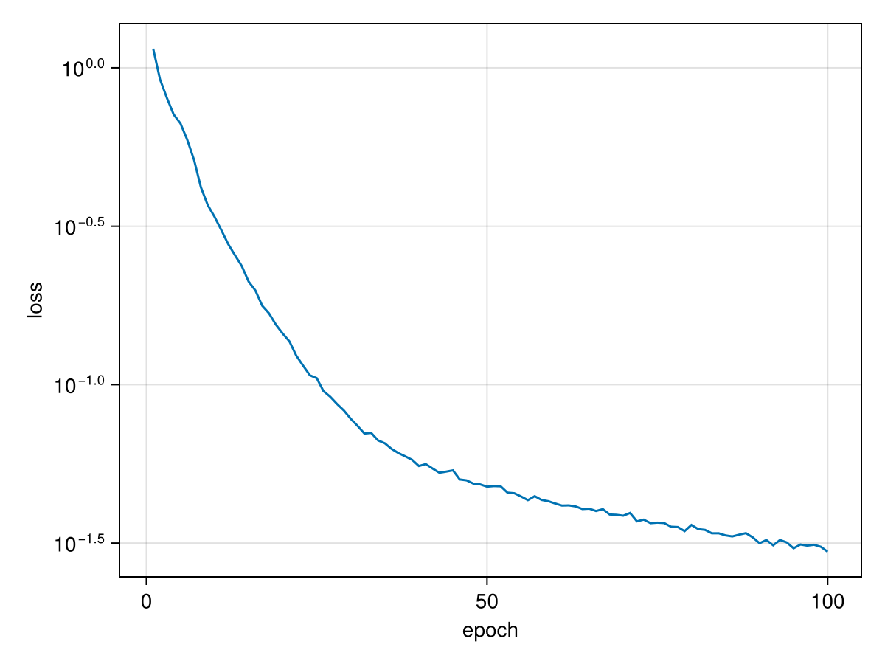
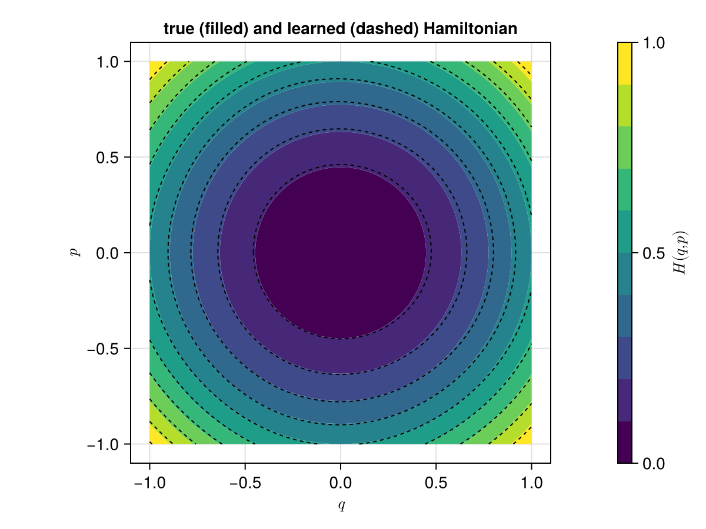
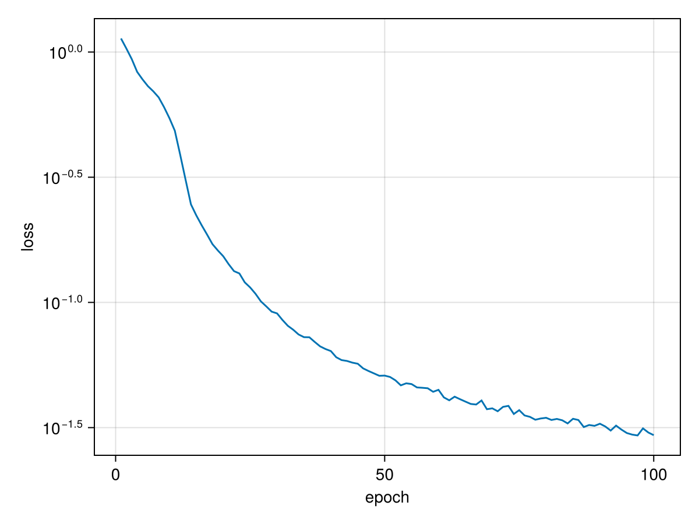
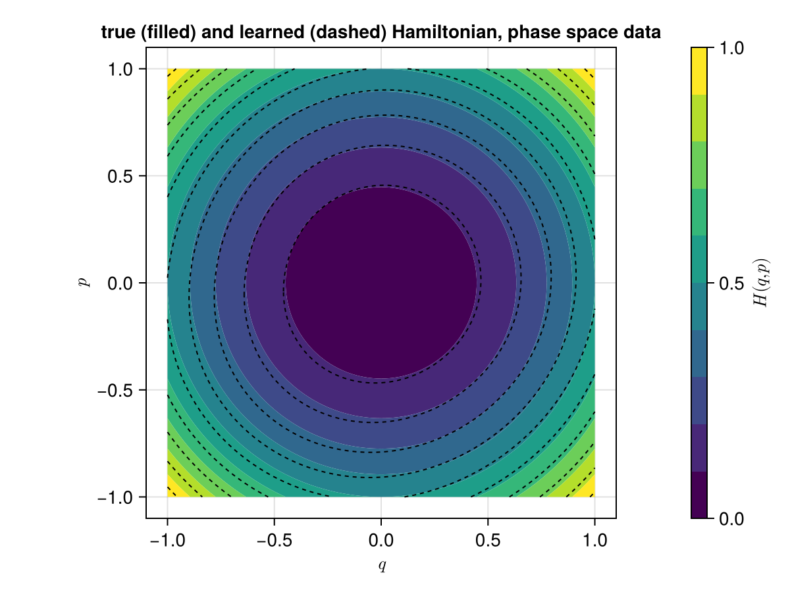

Hamiltonian Neural Network
In this tutorial we train a Hamiltonian neural network (HNN) on the simplest Hamiltonian system there is, the harmonic oscillator. Because we know its Hamiltonian, we can compare what the network learns with the truth at every step.
The tutorial has four parts:
- the system and the data,
- a network trained on vector field data, the velocity at a set of states,
- a look at the learned Hamiltonian, compared with the true one,
- a network trained on phase space data, pairs of states one timestep apart.
The System
The harmonic oscillator has one position $q$, one momentum $p$, and the Hamiltonian
\[H(q, p) = \frac{1}{2}\left(q^2 + p^2\right).\]
Its vector field is $X_H(z) = \mathbb{J}\nabla{}H(z)$ with the canonical Poisson tensor
\[\mathbb{J} = \begin{pmatrix} 0 & 1 \\ -1 & 0 \end{pmatrix},\]
so $\dot{q} = \partial{}H/\partial{}p = p$ and $\dot{p} = -\partial{}H/\partial{}q = -q$. The trajectories are circles, and $H$ is constant along each of them. For this $H$ the gradient is $\nabla{}H(z) = z$, so the vector field is the linear map $z \mapsto \mathbb{J}z$:
using HamiltonianNeuralNetworks
using GeometricMachineLearning: Adam, Batch, DataLoader, NeuralNetwork, TrainingOptimizer,
train!
using CairoMakie
𝕁 = [0.0 1.0; -1.0 0.0] # the canonical Poisson tensor of ℝ²
H(z) = (z[1]^2 + z[2]^2) / 2 # the true Hamiltonian
vf(z) = 𝕁 * z # its vector field, 𝕁∇HThe network never sees H. We keep it only to judge the result.
Training on Vector Field Data
The Data
We sample the vector field on a $21 \times 21$ grid of the square $[-1, 1]^2$. The data loader takes the states and the vector field as two matrices with one sample per column:
domain = [[q, p] for q in -1:0.1:1 for p in -1:0.1:1]
domain_matrix = hcat(domain...) # 2 × 441, the states
vf_matrix = hcat(vf.(domain)...) # 2 × 441, the vector field at each state
dl = DataLoader(domain_matrix, vf_matrix)[ Info: You have provided an input and an output.The Network
StandardHamiltonianArchitecture builds a network $\mathcal{NN}: \mathbb{R}^2 \to \mathbb{R}$, a scalar function that plays the role of the Hamiltonian. The first argument is the dimension of the phase space, here $2$, and the second is the width of the hidden layer:
const intermediate_dim = 5
hnn_arch = StandardHamiltonianArchitecture(2, intermediate_dim)
hnn = NeuralNetwork(hnn_arch)The network does not output a vector field. The vector field is $X_\mathcal{NN} = \mathbb{J}\nabla\mathcal{NN}$, which the package differentiates symbolically. Every vector field the network can represent is therefore Hamiltonian, whatever its parameters are.
The Loss
HNNLoss compares $X_\mathcal{NN}$ with the data. It is the relative error of the vector field on a batch: the norm of $X_\mathcal{NN}(z_i) - \dot{z}_i$ over the batch, divided by the norm of the $\dot{z}_i$.
loss = HNNLoss(hnn_arch)Usually we use Zygote for computing derivatives in GeometricMachineLearning, but as the Zygote documentation itself points out: "Often using a different AD system over Zygote is a better solution [for computing second-order derivatives]." For this reason we compute the loss of the HNN with SymbolicNeuralNetworks and optionally also its gradient.
Training
We train for 100 epochs with the Adam optimiser. Each epoch goes once through the data, in batches of 10 samples. train! returns the mean loss of each epoch:
batch = Batch(10)
n_epochs = 100
o = TrainingOptimizer(hnn.params; algorithm = Adam())
loss_array = train!(hnn, o, dl, batch, n_epochs; loss)
fig_loss = Figure()
ax_loss = Axis(fig_loss[1, 1]; xlabel = "epoch", ylabel = "loss", yscale = log10)
lines!(ax_loss, loss_array)
fig_loss
The loss falls by more than an order of magnitude. A small loss says that the learned vector field is close to the data. It does not yet show what the network has learned about $H$.
The Learned Hamiltonian
The network itself is the learned Hamiltonian: hnn(z) returns $\mathcal{NN}(z)$ as a vector with one entry. Before we compare it with $H$, note one property of the loss. The loss sees only the gradient of $\mathcal{NN}$, and the gradient does not change when a constant is added. The data therefore fix the learned Hamiltonian only up to a constant. We remove that constant by shifting the network so that it is zero at the origin, as $H$ is:
learned_hamiltonian(nn) = z -> only(nn(z)) - only(nn([0.0, 0.0]))
H_hnn = learned_hamiltonian(hnn)The filled contours show the true Hamiltonian $H$. The dashed lines are the contours of the learned Hamiltonian, at the same levels. Where the network is accurate, each dashed line follows the edge between two colours:
qs = range(-1, 1; length = 101)
ps = range(-1, 1; length = 101)
levels = range(0, 1; length = 11)
function compare_hamiltonians(H_learned, title)
fig = Figure()
ax = Axis(fig[1, 1]; xlabel = L"q", ylabel = L"p", title, aspect = DataAspect())
cf = contourf!(ax, qs, ps, [H([q, p]) for q in qs, p in ps]; levels)
contour!(ax, qs, ps, [H_learned([q, p]) for q in qs, p in ps];
levels, color = :black, linestyle = :dash)
Colorbar(fig[1, 2], cf; label = L"H(q, p)")
fig
end
compare_hamiltonians(H_hnn, "true (filled) and learned (dashed) Hamiltonian")
The level sets of the network are close to circles, and they sit at the right values. We can put a number on that, the largest difference between the two functions on the grid:
maximum(abs(H_hnn(z) - H(z)) for z in domain)0.03644302924122744Training on Phase Space Data
Vector field data are often not available. A simulation or an experiment gives states at discrete times instead. We now train an HNN on the same system from phase space data: pairs of states one timestep $\Delta{}t$ apart.
The Data
The exact flow of the harmonic oscillator over a time $\Delta{}t$ is the matrix exponential $\exp(\Delta{}t\,\mathbb{J})$, a rotation of the plane. We apply it to every point of the grid, and each point with its image forms one pair:
const Δt = .1
next_matrix = exp(Δt * 𝕁) * domain_matrix
dl_pairs = DataLoader(domain_matrix, next_matrix)[ Info: You have provided an input and an output.The Network and the Loss
We start from a new network of the same architecture:
hnn_pairs = NeuralNetwork(hnn_arch)Without the vector field, the loss compares the network with a finite difference instead. It takes one step of the symplectic Euler method with $X_\mathcal{NN}$ and compares the result with the second state of the pair. The loss therefore needs the timestep:
loss_pairs = SymplecticEulerLoss(hnn_arch, Δt)HamiltonianNeuralNetworks.SymplecticEulerLoss defaults to the :A variant, which evaluates the vector field at $(q^{(t+1)}, p^{(t)})$. Passing variant = :B evaluates it at $(q^{(t)}, p^{(t+1)})$ instead, which is the variant the loss formula is written for.
Training
The training is the same as before, with the new data, network and loss:
o_pairs = TrainingOptimizer(hnn_pairs.params; algorithm = Adam())
loss_array_pairs = train!(hnn_pairs, o_pairs, dl_pairs, batch, n_epochs; loss = loss_pairs)
fig_loss_pairs = Figure()
ax_loss_pairs = Axis(fig_loss_pairs[1, 1]; xlabel = "epoch", ylabel = "loss", yscale = log10)
lines!(ax_loss_pairs, loss_array_pairs)
fig_loss_pairs
What This Network Learns
H_pairs = learned_hamiltonian(hnn_pairs)
compare_hamiltonians(H_pairs, "true (filled) and learned (dashed) Hamiltonian, phase space data")
maximum(abs(H_pairs(z) - H(z)) for z in domain)0.059238151300396336The level sets of this network are not circles but slightly tilted ellipses, and the error is larger than with vector field data. More training does not remove this difference, because the network learns what the loss asks for:
The data come from the exact flow, but the loss holds the network to one step of the symplectic Euler method. The two agree only to first order in $\Delta{}t$. The target of this training is therefore not the Hamiltonian of vf, which is $H(q, p) = (q^2 + p^2) / 2$, but the Hamiltonian whose symplectic Euler step reproduces the exact flow; the two differ at order $\Delta{}t$. So $H$ itself does not make this loss vanish, and scripts/verification/symplectic_euler_loss_modified_hamiltonian.jl shows the residual it leaves halves when $\Delta{}t$ does. The first section compares the network against the vector field directly and has no such offset.
Summary
- An HNN learns a scalar function $\mathcal{NN}$ and uses $\mathbb{J}\nabla\mathcal{NN}$ as its vector field, so the learned dynamics are Hamiltonian by construction.
- The network is the learned Hamiltonian, but the data fix it only up to a constant.
- With vector field data,
HNNLosscompares the vector fields directly, and the learned Hamiltonian approaches the true one. - With phase space data,
SymplecticEulerLosscompares one step of a symplectic integrator with the data. The network then learns the Hamiltonian that this integrator needs to reproduce the data, which differs from the true one at order $\Delta{}t$.